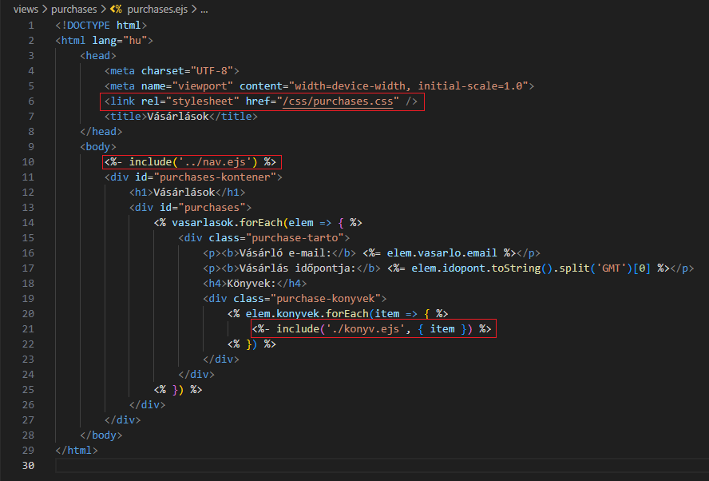
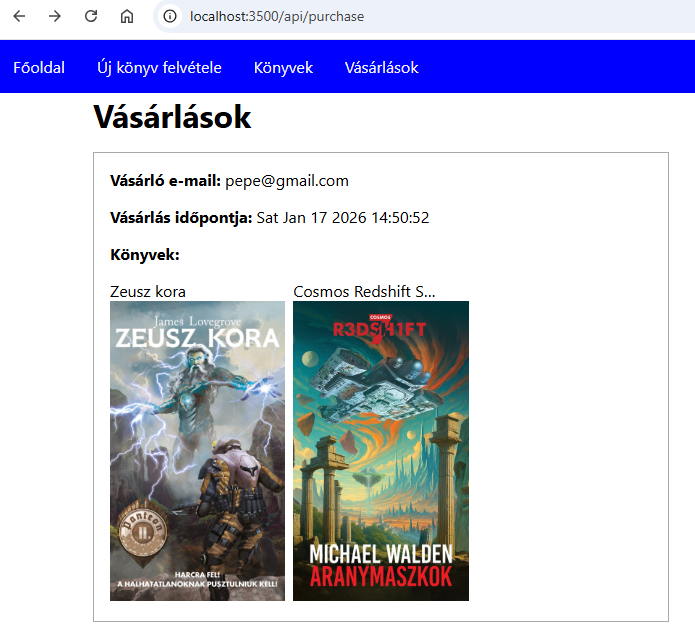
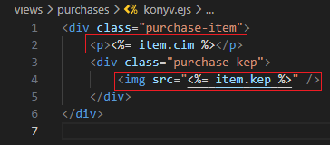
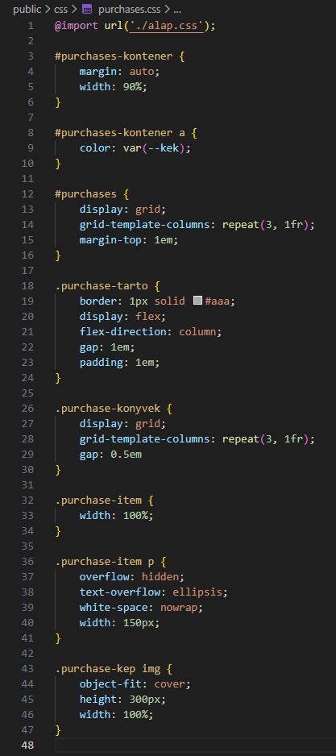

Vásárlás kezelése - purchases.ejs
Vásárlás kezelése - purchases.ejs
Ebben a részben szerkesztjük az views/purchases mappában a vásárlások kezeléséhez szükséges ejs állományokat.
-
Szerkesszük a
nav.ejsállományt. és

-
Szerkesszük a
purchases.ejsállományt. és-
<link rel="stylesheet" href="/css/purchases.css" />- mivel aserver.mjsállományban beállítottuk a hivatkozást apublicmappára, ezért minden elemére ilyen speciálisan tudunk hivatkozni. -
<%- include('../nav.ejs') %>- beimportálása anav.ejsállománynak. -
<%- include('konyv.ejs', { item }) %>- beimportálása akonyv.ejsállománynak, ahol átadjuk a{ item }objektumot.
-
-
Szerkesszük a
konyv.ejsállományt.-
<p><%= item.cim %></p>- apurchases.ejs-től kapott objektumból kivesszük azitem.cimértéket. -
<img src="<%= item.kep %>" />- apurchases.ejs-től kapott objektumból kivesszük azitem.kepértéket.
-
-
Szerkesszük az
purchases.cssállományt. -
Az eddigi munka letölthető formátumban:
backend_08.rar
Letöltés és kicsomagolás után aGitBashfelületen abackendmappában adjuk ki a következő utasítást:
npm install -
A webszerver futtatásához adjuk ki a következő utasítást a
GitBashfelületen:
node --watch ./src/server.mjs